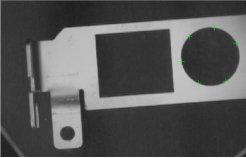
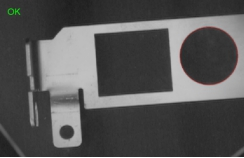

Thực hiện nội suy hình tròn cho tập hợp điểm đầu vào để tìm ra đường tròn phù hợp nhất. Hiệu quả áp dụng như Hình 1 bên dưới.
 
| Phân loại | Tên tham số | Mô tả tham số |
|---|---|---|
| Cửa sổ thuộc tính | Phương pháp nội suy | Gồm hai loại: khoảng cách đại số và khoảng cách hình học. |
| Bật nội suy tối ưu toàn cục | Chọn bật hay không nội suy tối ưu toàn cục, mặc định là "Không". Nếu chọn Không, sử dụng phương pháp ưu tiên hiệu suất; nếu chọn Có, sử dụng phương pháp tối ưu toàn cục. | |
| Xem xét điểm ngoại lai | Có xét đến các điểm lệch khỏi đường cong trong quá trình nội suy không. Chọn “Có” sẽ hiển thị phương pháp xử lý và số lượng điểm ngoại lai. | |
| Số lượng điểm ngoại lai | Số điểm không tham gia nội suy hình tròn, số này phải nhỏ hơn tổng số điểm trừ đi 3. | |
| Tự động điều chỉnh số điểm ngoại lai | Cho phép tự động điều chỉnh số điểm ngoại lai để giảm sai số RMS. Hữu ích trong trường hợp số lượng điểm ngoại lai phù hợp với phần lớn dữ liệu nhưng thiếu 1–2 điểm ở một vài dữ liệu gây sai số RMS cao. | |
| Ràng buộc bán kính | Xác định kích thước bán kính của đường tròn nội suy. | |
| Cửa sổ hình ảnh | Hình ảnh đầu vào | Hiển thị hình ảnh cần kiểm tra. |
| Tập điểm đầu vào | Hiển thị tập hợp điểm đầu vào. | |
| Chuỗi dữ liệu | Hình ảnh đầu vào | Thông tin về chiều rộng, chiều cao, kích thước điểm ảnh của hình ảnh – giống với tham số hình ảnh đầu vào trong cửa sổ hình ảnh. |
| Tập điểm đầu vào | Tập điểm nội suy – giống với tham số tập điểm đầu vào trong cửa sổ hình ảnh. | |
| Giao diện nâng cao | Không | Không |
| Phân loại | Tên tham số | Mô tả tham số |
|---|---|---|
| Cửa sổ giám sát | Hình ảnh đầu vào | Xuất chiều rộng, chiều cao, kích thước điểm ảnh của hình ảnh. |
| Kết quả hình tròn | Xuất tọa độ tâm và bán kính của đường tròn được nội suy. | |
| Sai số bình phương trung bình (RMS) | Độ sai số của kết quả nội suy, giá trị càng nhỏ thì kết quả càng chính xác. | |
| Kết quả thực thi | Kết quả thực thi của công cụ. | |
| Thời gian thực thi | Thời gian chạy công cụ. | |
| Cửa sổ hình ảnh | Kết quả hình tròn | Hiển thị kết quả nội suy đường tròn – giống tham số kết quả hình tròn trong cửa sổ giám sát. |
| Kết quả thực thi | Hiển thị kết quả thực thi: “OK” nếu thành công, “NG” nếu thất bại – giống tham số kết quả thực thi trong cửa sổ giám sát. | |
| Chuỗi dữ liệu | Kết quả hình tròn | Xuất kết quả nội suy để dùng cho công cụ kế tiếp – giống tham số kết quả hình tròn trong cửa sổ giám sát. |
Tùy theo định nghĩa của hàm sai số, nội suy đường cong chia thành hai loại: dựa trên khoảng cách đại số và dựa trên khoảng cách hình học. Giả sử phương trình đường cong cần nội suy là:
(1)
Tập điểm dữ liệu là (xi , yi), i=1,2,…,n (n>1), thì hàm sai số dựa trên khoảng cách đại số là:
(2)
Trong đó, vectơ P=(Pab) là các tham số cần tìm trong phương trình đường cong, Q(xi , yi) là khoảng cách đại số từ điểm (xi , yi) đến đường cong Q(x , y) = 0.
Hàm sai số dựa trên khoảng cách hình học là:
(3)
Trong đó, vectơ P=(Pab) là các tham số cần tìm trong phương trình đường cong, di là khoảng cách hình học từ điểm (xi , yi) đến đường cong Q(x , y) = 0.
Mỗi phương pháp đều có ưu và nhược điểm riêng.
Phương pháp dựa trên khoảng cách đại số thường có thể chuyển thành bài toán ước lượng tham số tuyến tính, nên quá trình tính toán đơn giản và trực tiếp. Trong nhiều trường hợp, phương pháp này là đủ, tuy nhiên nó không cho kết quả tối ưu vì hai lý do sau:
Khoảng cách đại số không có tính bất biến đối với phép biến đổi Euclid;
Các điểm trên đường cong đóng góp không đồng đều vào kết quả nội suy.
Phương pháp dựa trên khoảng cách hình học khắc phục được các vấn đề trên, nhưng vì biểu thức di phức tạp nên đây là bài toán ước lượng tham số phi tuyến, khiến tính toán trở nên phức tạp hơn. Phương pháp này hỗ trợ nội suy có ràng buộc như bán kính hoặc góc.
Xem tại “\Samples\形状间距及相关点.gvp”。